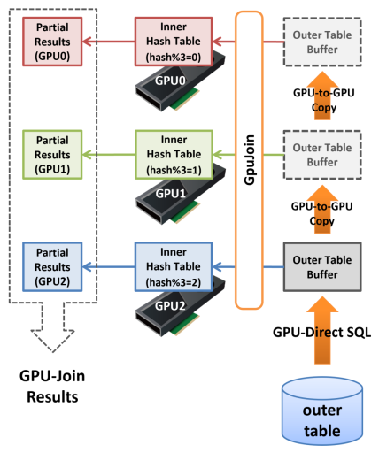

Pinned Inner Buffer
本章では、GPU-Joinでサイズの大きなテーブル同士を結合する際の処理効率を向上させるための技術であるPinned Inner Buffer機能について説明します。
概要
以下の実行計画を見てください。
PG-Stromがテーブルを結合する際、通常は最もサイズの大きなテーブル（この場合はlineorderで、OUTER表と呼びます）を非同期的に読み込みながら、他のテーブルとの結合処理および集計処理を進めます。
JOINアルゴリズムの制約上、予めそれ以外のテーブル（この場合はdate1、part、supplierで、INNER表と呼びます）をメモリ上に読み出し、またJOINキーのハッシュ値を計算する必要があります。これらのテーブルはOUTER表ほど大きなサイズではないものの、数GBを越えるようなINNERバッファの準備は相応に重い処理となります。
=# explain
select sum(lo_revenue), d_year, p_brand1
from lineorder, date1, part, supplier
where lo_orderdate = d_datekey
and lo_partkey = p_partkey
and lo_suppkey = s_suppkey
and p_brand1 between 'MFGR#2221' and 'MFGR#2228'
and s_region = 'ASIA'
group by d_year, p_brand1;
QUERY PLAN
---------------------------------------------------------------------------------------------------------------
GroupAggregate (cost=31007186.70..31023043.21 rows=6482 width=46)
Group Key: date1.d_year, part.p_brand1
-> Sort (cost=31007186.70..31011130.57 rows=1577548 width=20)
Sort Key: date1.d_year, part.p_brand1
-> Custom Scan (GpuJoin) on lineorder (cost=275086.19..30844784.03 rows=1577548 width=20)
GPU Projection: date1.d_year, part.p_brand1, lineorder.lo_revenue
GPU Join Quals [1]: (part.p_partkey = lineorder.lo_partkey) ... [nrows: 5994236000 -> 7804495]
GPU Outer Hash [1]: lineorder.lo_partkey
GPU Inner Hash [1]: part.p_partkey
GPU Join Quals [2]: (supplier.s_suppkey = lineorder.lo_suppkey) ... [nrows: 7804495 -> 1577548]
GPU Outer Hash [2]: lineorder.lo_suppkey
GPU Inner Hash [2]: supplier.s_suppkey
GPU Join Quals [3]: (date1.d_datekey = lineorder.lo_orderdate) ... [nrows: 1577548 -> 1577548]
GPU Outer Hash [3]: lineorder.lo_orderdate
GPU Inner Hash [3]: date1.d_datekey
GPU-Direct SQL: enabled (GPU-0)
-> Seq Scan on part (cost=0.00..59258.00 rows=2604 width=14)
Filter: ((p_brand1 >= 'MFGR#2221'::bpchar) AND (p_brand1 <= 'MFGR#2228'::bpchar))
-> Custom Scan (GpuScan) on supplier (cost=100.00..190348.83 rows=2019384 width=6)
GPU Projection: s_suppkey
GPU Pinned Buffer: enabled
GPU Scan Quals: (s_region = 'ASIA'::bpchar) [rows: 9990357 -> 2019384]
GPU-Direct SQL: enabled (GPU-0)
-> Seq Scan on date1 (cost=0.00..72.56 rows=2556 width=8)
(24 rows)
GpuJoinは通常、PostgreSQLのAPIを通してINNER表を一行ごとに読み出し、そのハッシュ値を計算するとともに共有メモリ上のINNERバッファに書き込みます。GPU-Serviceプロセスは、このINNERバッファをGPUメモリに転送し、そこではじめてOUTER表を読み出してJOIN処理を開始する事ができるようになります。 INNER表が相応に大きくGPUで実行可能な検索条件を含む場合、以下の実行計画のように、GpuJoinの配下にGpuScanが存在するケースがあり得ます。この場合、INNER表はいったんGpuScanによってGPUで処理された後、その実行結果をCPU側に戻し、さらにINNERバッファに書き込まれた後でもう一度GPUへロードされます。ずいぶんと無駄なデータの流れが存在するように見えます。

このように、INNER表の読出しやINNERバッファの構築の際にCPUとGPUの間でデータのピンポンが発生する場合、Pinned Inner Bufferを使用することで、GpuJoinの実行開始リードタイムの短縮や、メモリ使用量を削減する事ができます。
上の実行計画では、supplier表の読出しがGpuScanにより行われる事になっており、統計情報によれば約200万行が読み出されると推定されています。その一方で、GPU Pinned Buffer: enabledの出力に注目してください。これは、INNER表の推定サイズがpg_strom.pinned_inner_buffer_thresholdの設定値を越える場合、GpuScanの処理結果をそのままGPUメモリに残しておき、それを次のGpuJoinでINNERバッファの一部として利用するという機能です（必要であればハッシュ値の計算もGPUで行います）。
そのため、supplier表の内容はGPU-Direct SQLによってストレージからGPUへと読み出された後、CPU側に戻されたり、再度GPUへロードされたりすることなく、次のGpuJoinで利用される事になります。
一方で注意すべき点もあります。 Pinned Inner Bufferを使用するには、CPU-Fallbackを無効化する必要があります。
CPU-Fallbackとは、GPUでは処理できなかったデータをCPUに書き戻して再実行するための機能で、例えばTOAST化された可変長データを参照する条件式は原理上GPUで実行できないため、CPUに書き戻して再実行するために用いている機能です。しかしGpuScanを実行中にCPU-Fallbackが発生すると、GPUメモリ上の結果バッファ（これはGpuJoinのINNERバッファとして使用される）が完全な結果セットである事を保証できません。 また、Pinned Inner Bufferを使用するGpuJoinの実行にCPU-Fallbackが発生した場合、そもそもCPUはJOINに必要なINNERバッファを持っていないためにフォールバック処理を実行する事ができません。
そのため、Pinned Inner Bufferを使用するにはSET pg_strom.cpu_fallback = offを指定してCPU-Fallbackを無効化する必要があります。
これはGPU-SortでもCPU-Fallback処理の無効化を要求している理由と同じです。
マルチGPUの場合
多くのシステムではサーバ本体のRAMと比較してGPU搭載RAMの容量は限定的で、ハッシュ表のサイズにも制約があります。 複数のGPUにハッシュ表を分割配置する事でこの制限を緩和する事ができますが、あるGPU上でJOINの実行中に別のGPU上に配置されているINNER行を参照してしまうと、GPUメモリのスラッシングと呼ばれる現象が発生し強烈な速度低下を招いてしまうため、GPU-Joinの実行中にはメモリアクセスの局所性を確保できる仕組みが必要です。
マルチGPUシステムにおいて、Pinned Inner Bufferは次のように動作します。
GPU-Joinに先立ってINNER側テーブルのスキャン処理を複数のGPUで実行し、その処理結果をGPUメモリ上に留置してハッシュ表を構築した場合、それぞれのGPUにどのような行が載っているかは完全にランダムです。 次ステップのHash-Join処理でOUTER側から読み出した行が、最初にGPU1上のINNER行と結合し、次にGPU2上のINNER行と、最後にGPU0上のINNER行と結合するといった形になってしまうと、極端なスラッシングが発生し強烈な性能低下を引き起こします。
そのため、マルチGPUでのPinned-Inner-Buffer利用時には再構築（reconstruction）処理を挟み、ハッシュ表を適切なGPU上に再配置します。
例えば3台のGPUを搭載しているシステムで、ほぼハッシュ表の大きさが3台のGPU搭載RAMに収まる場合、INNER側テーブルのGPU-Scan終了後、次のGPU-Joinで利用する結合キーのハッシュ値を計算し、それを3で割った剰余が0の場合はGPU0に、1の場合はGPU1に、2の場合はGPU2にという再配置を行います。
この処理を挟む事で、GPU-JoinをGPU0上で実行した場合にハッシュ表にはハッシュ値を3で割った剰余が0であるINNER行しか存在せず、同様にGPU1にはハッシュ値を3で割った剰余が1であるINNER行しか存在しないという状態を作ることができます。

次にこの分割されたハッシュ表を用いてGPU-Joinを実行する場合、最初にOUTER側のテーブルからデータをロードしたGPU（ここではGPU2としましょう）がハッシュ表を参照する際、OUTER側の行から計算したハッシュ値を3で割った剰余が2以外であると、そのGPU上でマッチするINNER側の行は明らかに存在しません。 そのため、GPU2ではハッシュ値を3で割った剰余が2であるものだけから成る結合結果が生成されます。次に、このOUTER側のデータはGPU-to-GPU CopyによってGPU1へと転送され、そこではハッシュ値を3で割った剰余が1であるものだけから成る結合結果が生成されます。
これを繰り返すと、各GPU上で「部分的なHash-Joinの結果」が生成されますが、これらを統合したものは完全なHash-Joinの結果と等しくなり、結果としてGPU搭載RAMよりも大きなサイズのINNER側ハッシュ表であってもGPU-Joinを実行する事ができるようになりました。

本機能に関連して、pg_strom.pinned_inner_buffer_partition_sizeパラメータが追加されました。
これはPinned-Inner-Bufferを複数のGPUに分割する際の閾値となるサイズを指定するもので、初期値としてGPU搭載メモリの80～90%程度の値が設定されていますので、通常は管理者がこれを変更する必要はありません。